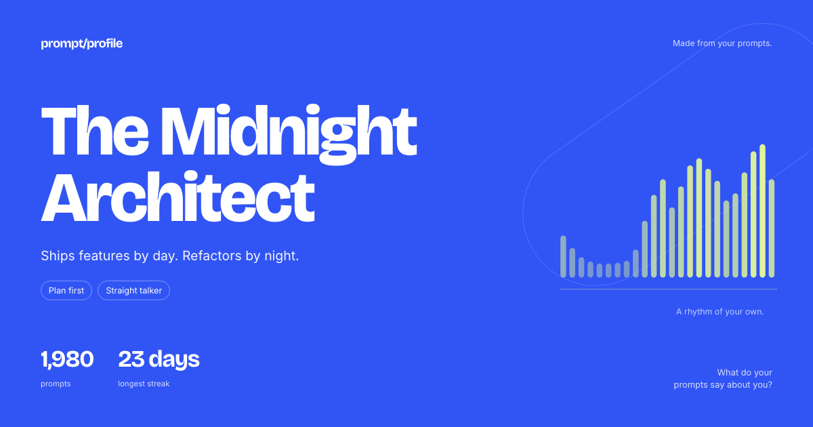
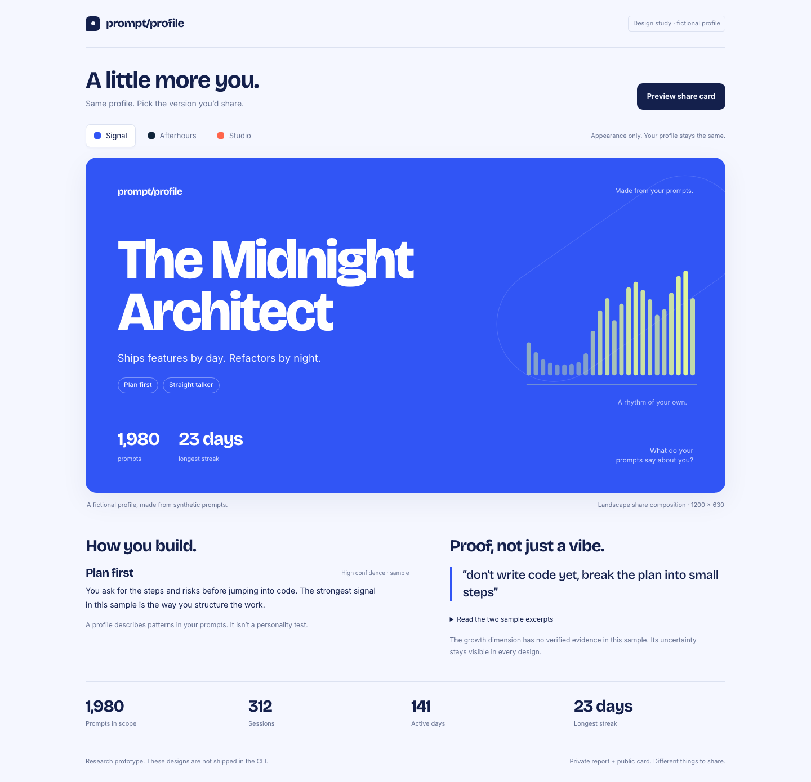
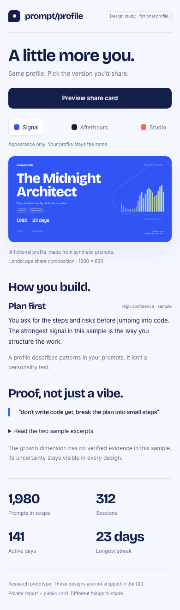
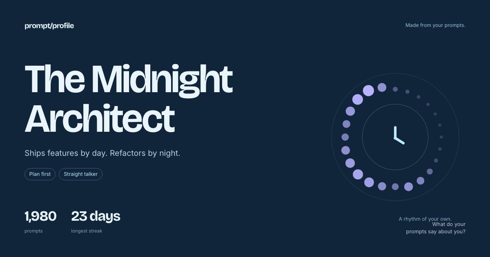
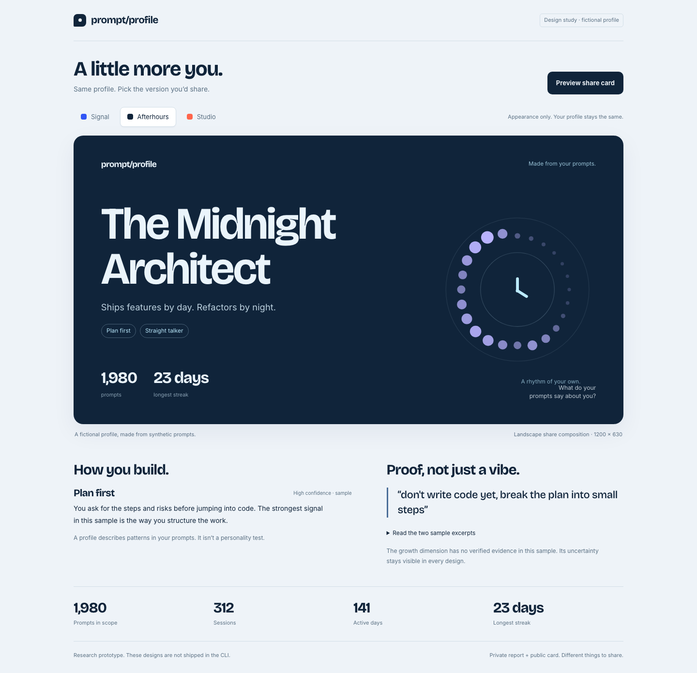
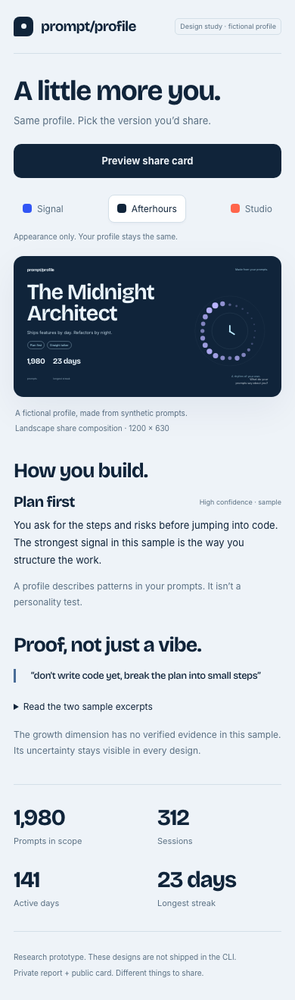
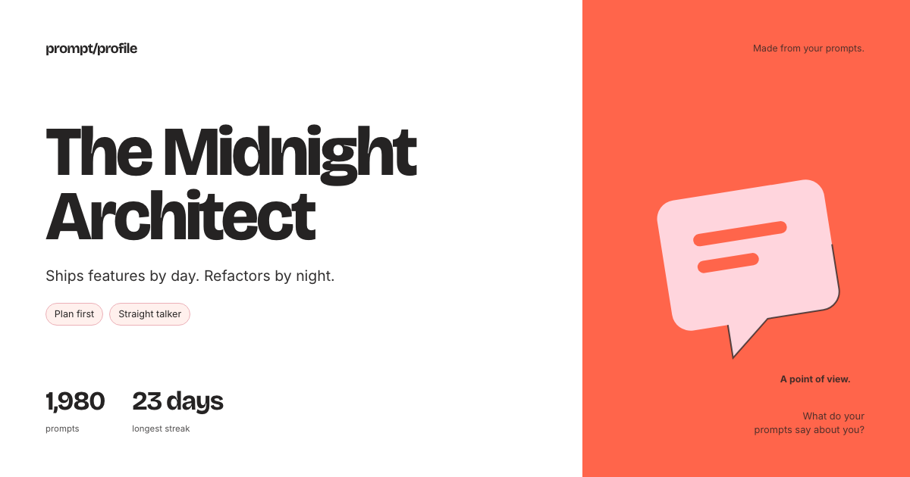
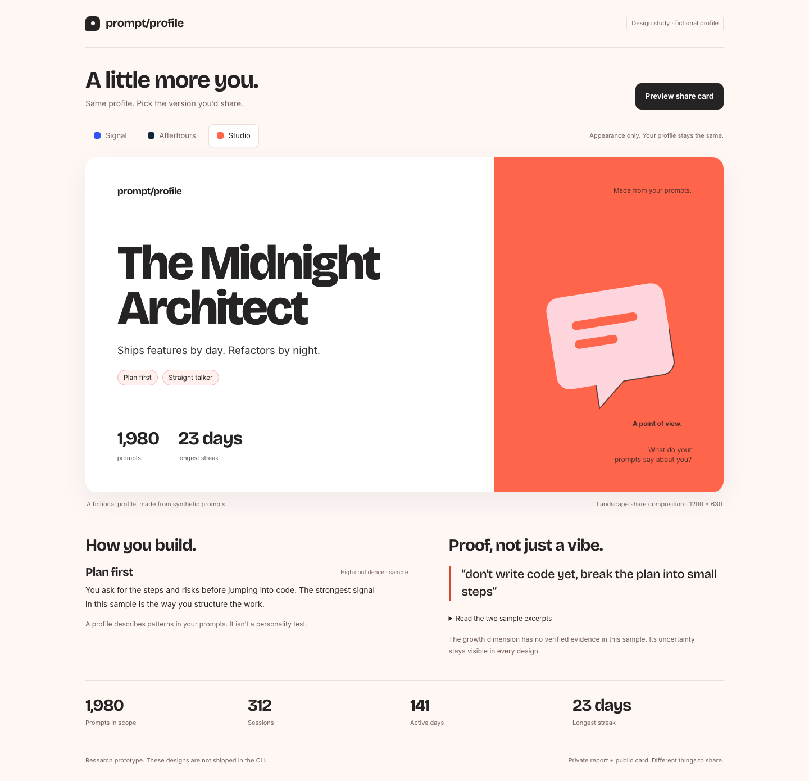
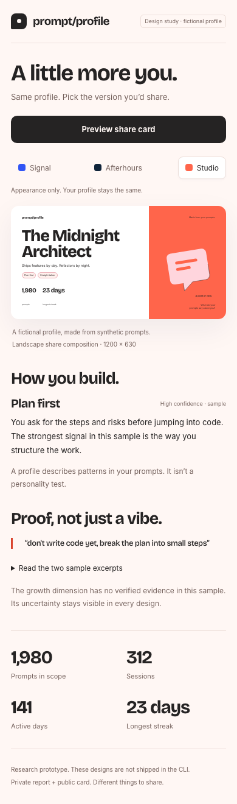

Signal · 1200 × 630 share-card concept. Fictional data. Research prototype, not shipped.

Signal · 1440px desktop report prototype. Fictional data. Research prototype, not shipped.

Signal · 390px mobile report prototype. Fictional data. Research prototype, not shipped.

Afterhours · 1200 × 630 share-card concept. Fictional data. Research prototype, not shipped.

Afterhours · 1440px desktop report prototype. Fictional data. Research prototype, not
shipped.

Afterhours · 390px mobile report prototype. Fictional data. Research prototype, not shipped.

Studio · 1200 × 630 share-card concept. Fictional data. Research prototype, not shipped.

Studio · 1440px desktop report prototype. Fictional data. Research prototype, not shipped.

Studio · 390px mobile report prototype. Fictional data. Research prototype, not shipped.